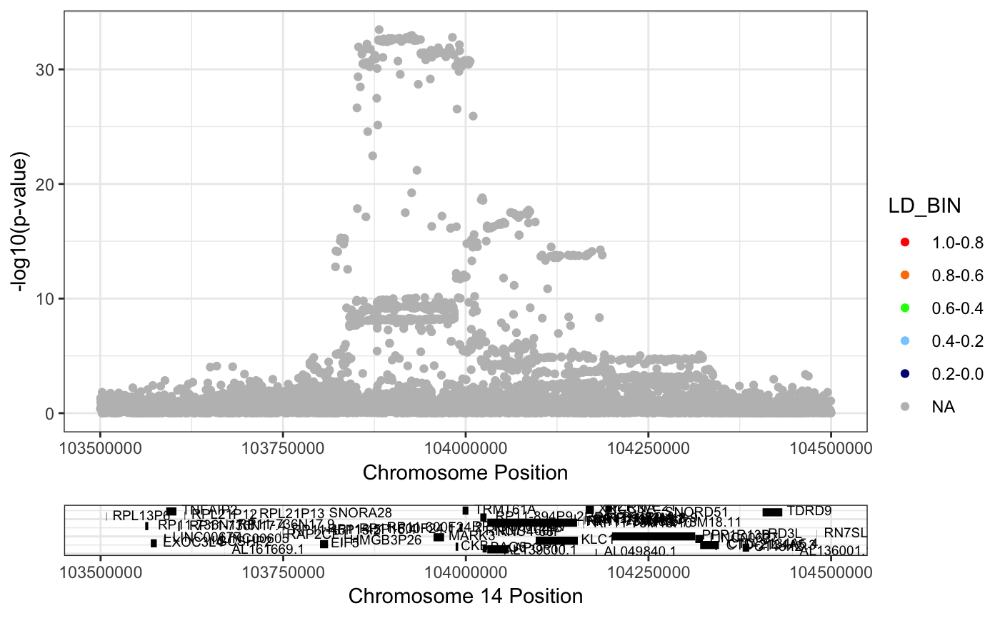

singlePlotRACER.RdThis function allows you to creat a plot of -log10(P-values) of an association study by their genomic position, for example, the results of a GWAS or eQTL study. Sources 1000K genomes phase III data for linkage disequilibrium calculations.
singlePlotRACER(assoc_data, chr, build = "hg19", plotby, gene_plot = NULL, snp_plot = NULL, start_plot = NULL, end_plot = NULL)
| assoc_data | required. A dataframe that has been produced by formatRACER and has columns named CHR, POS |
|---|---|
| chr | required. numeric. chromosome to plot |
| build | optional. default = "hg19", can also optionally be set to "hg38" |
| plotby | required. "coord", "gene", or "snp". Which parameter to use to determine the reigon to be plotted. |
| gene_plot | optional. Required if "gene" selected for plotby, then plot will be +/- 50kb of gene |
| snp_plot | optional. Required if "snp" selected for plotby, then plot will be +/- 50kb of snp |
| start_plot | optional. Required if "coord" selected for plotby, then this will be lower bound of x axis |
| end_plot | optional. Required if "coord" selected for plotby, then this will be upper bound of x axis |
data(mark3_bmd_gwas) mark3_bmd_gwas_f = formatRACER(assoc_data = mark3_bmd_gwas, chr_col = 3, pos_col = 4, p_col = 11)#>#>#>#>mark3_bmd_gwas_f_ld = ldRACER(assoc_data = mark3_bmd_gwas_f, rs_col = 5, pops = c("EUR"), lead_snp = "rs11623869")#>#>#>singlePlotRACER(assoc_data = mark3_bmd_gwas_f_ld, chr = 14, build = "hg19", plotby = "coord", start_plot = 103500000, end_plot = 104500000)#>#>#>#>